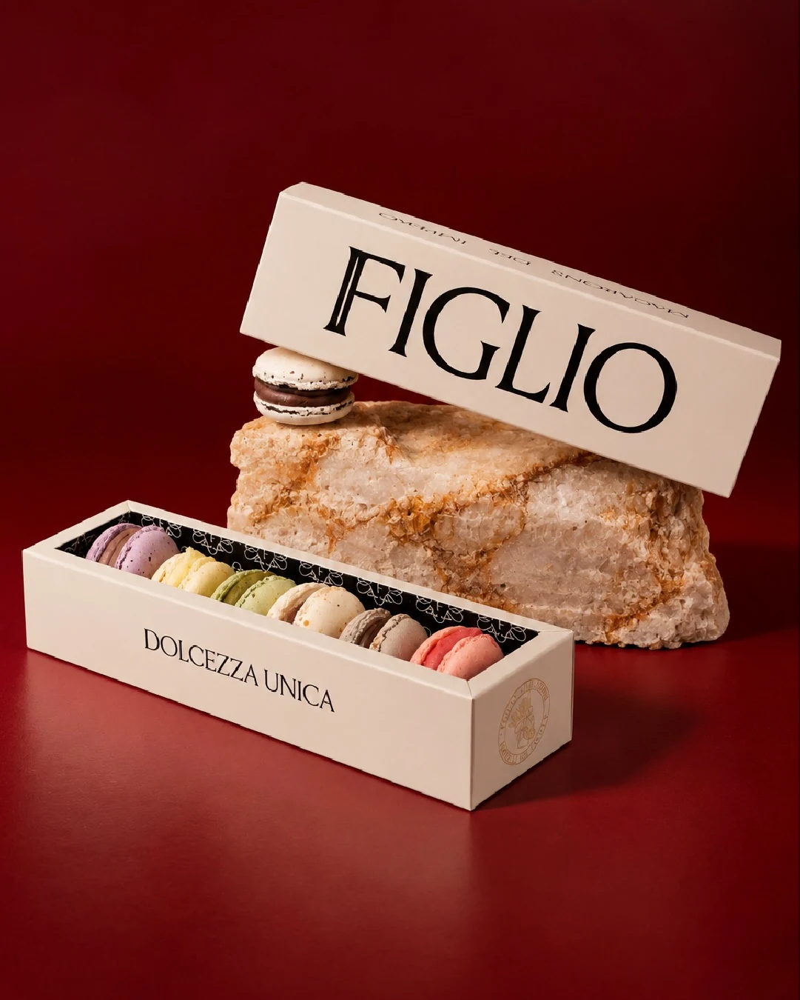

NUESTRAS ELABORACIONES
DOLCEZZE
Más que postres, son momentos para atesorar. Macarons, chocolates y creaciones únicas, elaborados con la misma pasión que define a FIGLIO.
EXPLORAR ELABORACIONES ↓
TRADIZIONEIN OGNI
DETTAGLIO
NUESTRA COLECCIÓN
Pequeñas creaciones,
una misma identidad.
El arte de las elaboraciones italianas. Ingredientes nobles, técnicas tradicionales y un cuidado extraordinario en cada detalle.
01 — LE CREAZIONI
Macarons
Delicados, crocantes por fuera y sorprendentemente suaves por dentro. Una colección de colores y texturas.
EXPLORAR COLECCIÓN ⟶02 — LE CREAZIONI
Cioccolato
Tabletas con almendras, cacao y una tradición que se siente en cada detalle.
EXPLORAR COLECCIÓN ⟶03 — LE CREAZIONI
Bombonería
Pequeñas obras de arte de chocolate, presentadas en estuches para descubrir y compartir.
EXPLORAR COLECCIÓN ⟶04 — LE CREAZIONI
Alfajores & regalos
Creaciones para regalar, celebrar y disfrutar sin apuro.
EXPLORAR COLECCIÓN ⟶UN MONDO DI DOLCEZZA